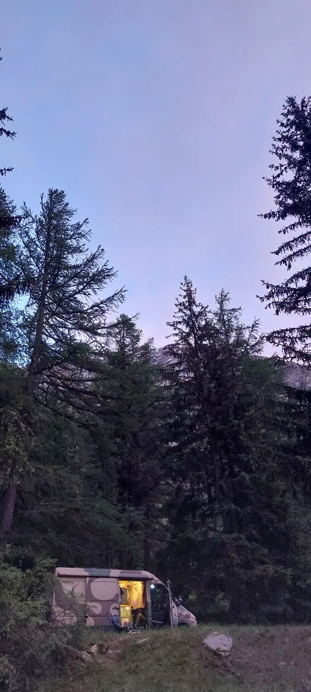

Een avond in de bus
Slapen waar je wilt, op de camping of in het wild
Stel je voor: je rijdt in de bergen en komt uit bij een mooie plek. Hier wil je de nacht doorbrengen. Met deze bus kan dat: Ik heb op de mooiste plekken gestaan, ver van elke camping. Deuren open slaan, koffie op het gaspitje, en genieten van je uitzicht. Dat kan ook jouw leven worden!
De afgelopen jaren is er veel liefde in de bus gestoken. De laatste jaren ging er ruim € 5.000 aan onderhoud mét facturen in: twee grote beurten, distributieriem, verse APK en nieuwe terreinbanden (Toyo Open Country, grof off-road profiel). Het motorblok is daarvóór gereviseerd door de vorige eigenaar — zelf vakman. De remleidingen zijn ook net vervangen.
